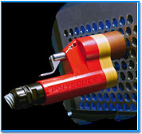
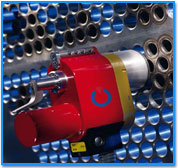
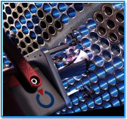
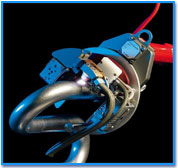
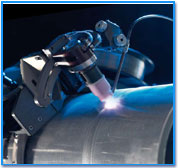
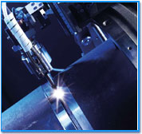

-
Tocar imagen para detallesTS 25
-
Tocar imagen para detallesTS 34Para materiales altamente oxidables.
on su cámara de purga de gas, el cabezal esta precisamente diseñado para la soldadura de titanio, inconel y todos los materiales sensibles a la oxidación. El cabezal de soldadura es centrado y fijado en el interior del tubo a ser soldado por medio de un mandril de expansión. Durante la soldadura el cuerpo del cabezal permanece estacionario mientras la antorcha rota alrededor del tubo.
Soldaduras TIG / GTAW de uniones tubo a placa-tubo ( I.D. desde 9,5 mm (0,4”) a O.D. 33,7 mm (1-1/3”)).
-
Tocar imagen para detallesTS 2000Particularmente diseñado para aplicaciones de alta exigencia de ciclo de trabajo.
Cabezal abierto diseñado para tubos al ras, sobresaliente o retraído. El cabezal de soldadura es introducido y centrado en el tubo a soldar por medio de un mandril de centrado. Durante la soldadura el cuerpo del cabezal permanece estacionario mientras la antorcha rota alrededor del tubo.
Soldaduras TIG / GTAW de uniones tubo a placa-tubo con aporte de alambre frío ( I.D. desde 10 mm (0,50”) a O.D. 60 mm (2,40”)).
-
Tocar imagen para detallesPolyfil - 3Alimentador de alambre montado en piso.
Alimentador de alambre para soldadura con alambre de aporte.
Alimentador TIG / GTAW de alambre de aporte frío.
-
Tocar imagen para detallesMU IV AVC/OSCPara aplicaciones estándar o especiales.
Cabezal de soladura con funciones completas AVC y antorcha oscilante. Perfectamente adaptado par a unir tubos y tendidos de tubería de espesores de pared medio y alto de todos los materiales soldables. . El cabezal se fija de un lado de la unión a soldar. Durante la soldadura, el cuerpo del cabezal permanece estacionario mientras la antorcha rota alrededor del tubo.
Soldadura TIG / GTAW con aporte de alambre frío para uniones tubo – tubo (O.D. desde 8 mm / 0,3” a 275 mm /11”)
-
Tocar imagen para detallesPOLYCAR 60-2Para tendido de tubería en tubos de gran diámetro.daptado perfectamente par ala unión de tubos y tendidos de tubería de espesor de pared medio a alto de todos los materiales soldables. El cabezal de soldadura viaja alrededor del tubo sobre un anillo guía previamente montado. Los anillos guía estan disponibles para todas las medidas de tubos. El cabezal provisto de todas las funciones, reproduce todos los movimientos de de un soldador manual adiestrado y completa la soldadura en series de pases.
Soldadura TIG / GTAW con aporte de alambre frío o caliente en unión de tubos y tendidos de tubería ( O.D. >= 114 mm / 4”).
-
Tocar imagen para detallesPOLYCAR MP / Tubería de tendidosPara multiprocesos.
El cabezal de soldadura esta provisto de todas las funciones que pueden ser usadas en varios procesos y diseños de bisel. Adaptado perfectamente par ala unión de tubos y tendidos de tubería de de espesor de pared medio a alto de todos los materiales soldables. . El cabezal de soldadura viaja alrededor del tubo sobre una banda de acero previamente montado.
Soldadura TIG / GTAW con aporte de alambre frío o caliente para biseles de diseño grande o de ranura estrecha (narrow groove) MIG-MAG / GMAW / FCAW con biseles en V con o sin separación / Biseles en U sin separación / Plasma / soldadura a tope.
Con su cámara de purga de gas, el cabezal esta precisamente diseñado para la soldadura de titanio, inconel y todos los materiales sensibles a la oxidación. El cabezal de soldadura es centrado y fijado en el interior del tubo a ser soldado por medio de un mandril de expansión. Durante la soldadura el cuerpo del cabezal permanece estacionario mientras la antorcha rota alrededor del tubo.
Soldaduras TIG / GTAW de uniones tubo a placa-tubo ( I.D. desde 10 mm (0,4”) a O.D. 25 mm (1”)).